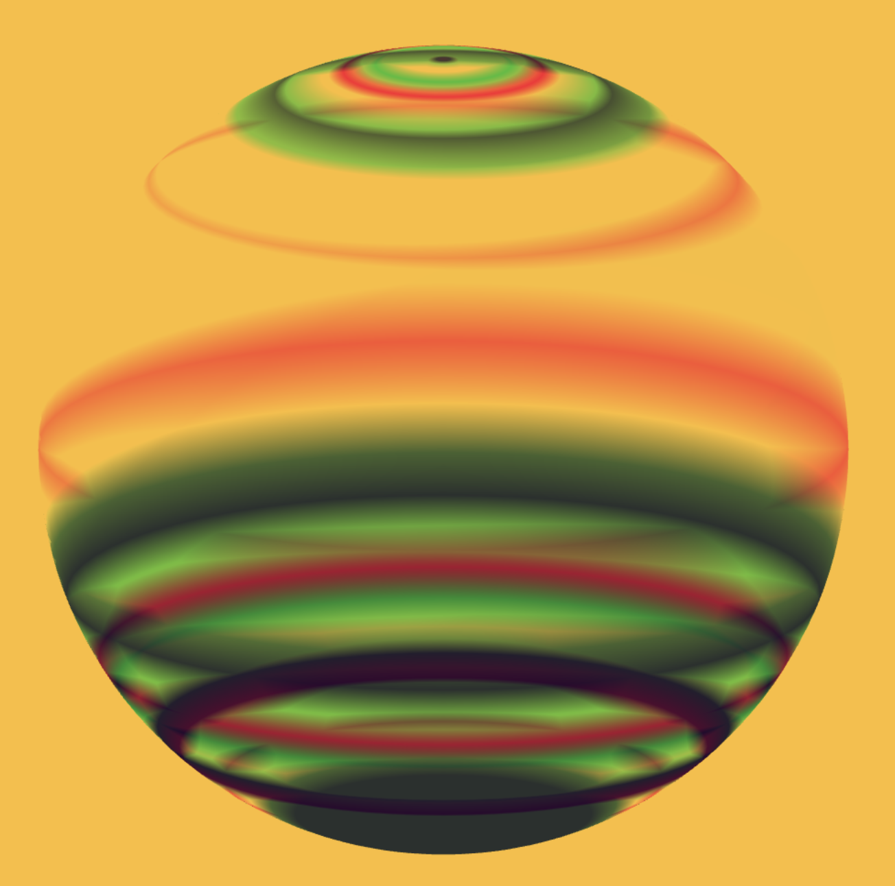

Take a look around, u might have to move things to see properly though.
What does a tree sound like?
I really enjoyed this one, it was so fun to visualize
the different sounds and how they changed with different objects.
The sound waves were really cool.
Everything kinda gave off a TouchDesigner vibe too.

Floooating baaaalll~~
Cooolourful baaaalll~~~
this is a screenshot from the original work, with colors
falling from the top around the sphere.
hunt-n-gather #1 mirror mirror webcam
the viewer becomes the artwork!
hunt-n-gather #2 mirror mirror webcam
one of our more interactive pieces,
have a play around with the buttons